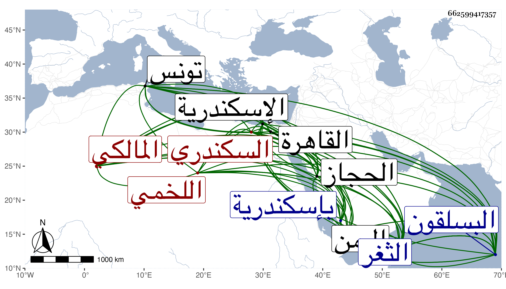

0902Sakhawi.DawLamic.ITO20230111-ara1.EIS1600.662599417357
Biography ID: 662599417357
439
عمر بن يوسف بن عبد الله بن محمد بن خلف بن غالي بن محمد بن تميم السراج أبو علي بن أبي كامل بن العلامة الجمال العفيفي نسبة لعفيف الدين أحد أجداده القبايلي اللخمي السكندري المالكي ويعرف بالبسلقوني لنزوله بها وقتا شيخ الفقراء الأحمدية . ولد في شعبان سنة إحدى وستين وسبعمائة بإسكندرية وخرج به جده إلى إقطاعه قرية البسلقون تحت اسكندرية بقليل فأقام بها إلى أن توفي جده وقرأ بها القرآن وقال أنه حفظ البقرة في يوم واحد ثم رحل به أبوه إلى الثغر وسنة دون العشر فرجع أبوه إلى البسلقون وتخلف هو بالثغر فحفظ الرسالة والشاطبية وألفية ابن ملك وعرض على جماعة وتفقه بالشهاب أحمد بن صلح بن حسن اللخمي والشمس محمد بن علي الفلاحي وأخذ النحو عنه وعن منصور بن عبد الله المغربي وأصول الفقه عن الشمس محمد بن يعقوب الغماري المالكي وأصول الدين عن المحيوي يحيى الهني قال : وانتفعت به كثيرا والمعاني والبيان عن السراج عمر بن نبوه الطنتداوي وتلا بالسبع على الوجيه أبي القسم عبد الرحمن بن ناصر الدين أبي علي منصور بن محمد بن سعد الدين مسعود الفكيري خطيب الجامع الغربي بالثغر إفرادا ثم جمعا إلى آخر سورة الأنعام وليعقوب من أوله إلى آخر المائدة وعرض عليه الشاطبية حفظا في مجلس وكذا جميع الرسالة والرائية وعدة المجيد وعمدة المفيد في التجويد للسخاوي وقصيدة الخالقاني في مجالس متفرقة وأجاز له وكذا أجاز له محمد بن يوسف الكفرائي وتلا على عمه الشهاب أحمد للدوري عن أبي عمرو وعلى الشرف يعقوب الجوشني لأبي عمرو تامة ومن أول الفاتحة إلى يسألونك عن الخمر والميسر للسبعة وأذن له في الإقراء وعلى محمد بن يوسف بن عبد الخالق اللخمي إفرادا لكثير من السبعة ثم جمعا لها ببعض القرآن وقرأ عليه الشاطبية حفظا وأذن له في الإقراء أيضا في سنة ثمان وتسعين ولأبي عمرو فقط على البرهان إبراهيم بن محمد القافري والشمس محمد بن محمد السلاوي وأخذ الفرائض عن الشمس أبي عبد الله محمد بن الجمال أبي محمد يوسف الحريري الشافعي قرأ عليه جميع الرحبية وكفاية الناهض في علم الفرائض للفاكهاني ومجموع الكلائي وأذن له في الإفتاء والتدريس فيها وفي مذهب مالك وذلك في سنة إحدى عشرة وكذا أذن له بذلك أبو بكر بن خليل الحنفي وبحث على محمد بن يعقوب بن داود الغماري المالكي كثيرا من مسائل الفروع المالكية والأصول الفقهية والقواعد النحوية وأذن له في الإفتاء والتدريس في المذهب وإقراء ما رام من كتب النحو وغيرها وذلك في سنة عشرين وكذا أذن له أبو القسم عبد العزيز بن موسى بن محمد العبدوسي بعد أن تكلم معه فوجده أهلا لإقراء كل علم من حديث أو قراءة أو تفسير أو فقه أو فرائض أو عدد أو عربية في ربيع الأول سنة إحدى وعشرين ، وخدم العلم ودأب وعلق وصنف في أنواع العلوم جواهر الفوائد وكتب الخط المنسوب ، ثم حصل لعينيه ضرر في حدود سنة خمس وثلاثين فكان لا يبصر إلا قليلا ونظم المنظومات المتباينة كالجوهرة الثمينة في مذهب عالم المدينة أرجوزة في نحو ستمائة بيت وأرجوزة أخرى في العبادات في نحو خمسين وله في الفرائض أراجيز أحسنها تحفة الرائض مائة واثنان وسبعون بيتا وشرحها في مجلد قال : واشتهر ذلك في الحجاز واليمن وبهجة الفرائض تسعين بيتا وشرحها أربعة كراريس ونظم في العربية عدة أراجيز وقصيدة على نحو الشاطبية في مائة بيت غريبة في فنها سماها بعض أصحابه العمرية وأرجوزة ضمنها ما في التلخيص من الزيادة عليه في مائتي بيت ونيف وعشرين وأفرد أصول قراءة أبي عمرو في نحو الشاطبية ورويها قال : وبلغني أنها شرحت بتونس وهو كثير النظم وفسر الفاتحة ومن أول سورة النبأ إلى آخر القرآن في مجلد سماه بعضهم سراج الأغراب في التفسير والمعاني والبيان شحنه فوائد وأجاد فيه ، ولقيه البقاعي في سنة ثمان وثلاثين ثم في سنة أربع وأربعين ، ووصفه بالعلامة الثقة الضابط وقال أيضا : رأيته إنسانا جيدا عنده مروءة وعقل معيشي وأدب وكيس وهو ضابط متقن ثقة متيقظ قال : وربما يقع له البيت المكسور فيخبر به فينكر أن يكون مكسورا ولا يرجع ، قلت : وكأنه لعدم وثوقه بالمخبر قال وقال أنه سمع الموطأ على القروي بقراءة الكمال الشمني وأنه قرأه على الكمال بن خير وأجاز له ابن عرفة وأنه رأى النبي صلى الله عليه وسلم في المنام وقرأ معه الفاتحة وأنه قصر مد المستقيم في الوقف فردها صلى الله عليه وسلم بمد طويل وقرأ عليه أيضا بعض سورة مريم في منام طويل وقرأ عليه كذلك الفاتحة ، قال : وكان ذا ثروة عظيمة ثم نزل به الحال ، وقد تردد إلى القاهرة مرارا ولقي الزين العراقي فشافهه بالإجازة وكذا أجاز له البلقيني وابن الملقن والأبناسي وابن الشيخة والتنوخي والشهاب الجوهري والفخر عثمان بن محمد بن وجيه الشيشيني وكان حيا سنة أربع وأربعين ورأيت ابن عزم أرخ وفاته سنة اثنتين وأربعين ووصفه بشيخنا . )
